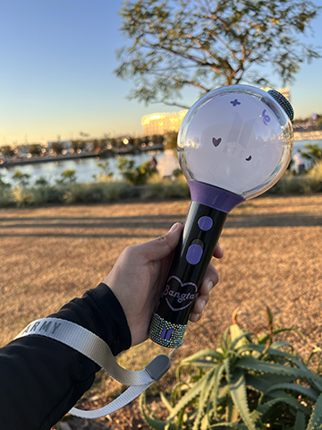
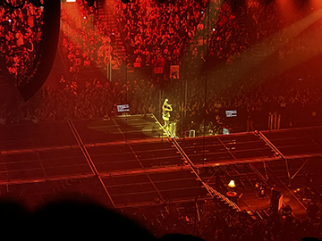
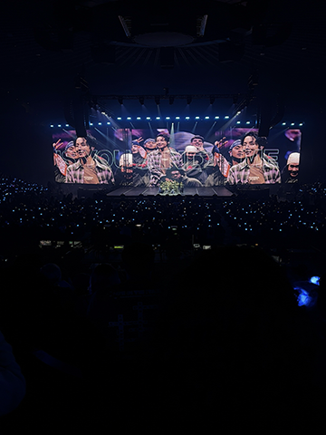
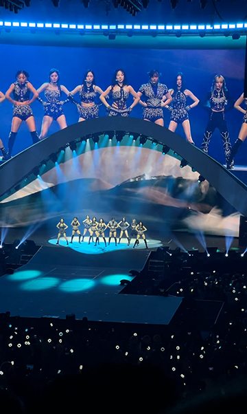
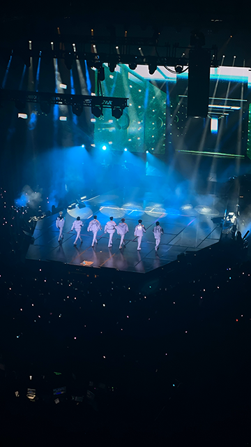
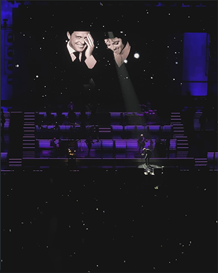

Top Fives
Things to collect:
1. K‑Pop Albums
I love collecting both new and older K‑Pop albums. The excitement of album inclusions and photocard pulls makes it such a fun hobby!


2. Keychains & Trinkets
I enjoy collecting cute keychains and small trinkets that reflect my personality and interests.


3. Plushies
I collect plushies from BT21, Sanrio, and Disney! I love finding unique ones that connect with what I love now.


4. Barbie & Monster High DVDs
This was my very first collection! I’ve had these since I was a kid and still treasure them to this day.
5. Disney Japan: Tsum Tsums
I started collecting Tsum Tsums in 2014 when they launched in the U.S. I now own 64, and still love them despite the line ending here.
Top 5 Concerts I’ve Attended
-
BTS and Solo Concerts
I’ve seen BTS and solo tours for SUGA and J‑Hope in Oakland. Unforgettable memories.
   -
Tomorrow by Together (TXT)
I’ve seen them twice and loved watching their growth and stage presence develop. Great energy!

-
Twice
My first girl‑group concert with friends! They even did an extra encore song—so special and exciting!
 -
Enhypen
I’d been waiting to see them, and when they came to Oakland it was worth it—the crowd’s energy was infectious.
 -
Luis Miguel
A special concert with my mom—her first time seeing her favorite artist live. Such a beautiful, shared memory.
